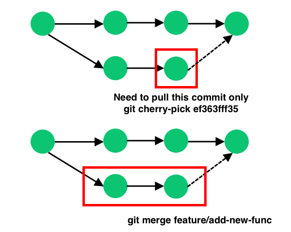

git status12 Stashing and Co.
Summary
In this chapter, we will look at some more advanced essential commands, including stashing, reverting and rebasing
12.1 Stashing changes for later use
git stash is a valuable command in Git that allows you to save your current changes temporarily without committing them. This is useful when you need to switch branches or work on something else without creating a commit for unfinished work. For example, when you’re working on a feature and you need to switch to a different task quickly or your work gets interrupted unexpectedly, you may not want to commit your unfinished changes. When you run git stash, Git stores the changes in your working directory and staged changes in a special stash commit. The working directory is then reverted to the last committed state, providing a clean slate for your next task.
12.1.1 Stashing changes
To demonstrate the usefulness of git stash, you can edit one or more files in your repository, stage or don’t stage your changes, but don’t commit them. Now use git status to look at your working directory.
Yo should get an output similar to:
Changes to be committed:
(use "git reset HEAD <file>..." to unstage)
modified: example.html
Changes not staged for commit:
(use "git add <file>..." to update what will be committed)
(use "git checkout -- <file>..." to discard changes in working directory)
modified: example.txt In this example, there are changes on two tracked files, one staged and one not staged, that we want to stash. Just like when committing, it is possible to add a message when stashing using the -m flag. It makes sense to add a message because it serves as a reminder of what changes were stashed, making it easier to identify the purpose of the stash when you later list or apply stashes.
git stash -m "feature X WIP"You should get an output similar to:
Saved working directory and index state On feature: "feature X WIP"You can now use git status to look at your working directory again and should see an output similar to:
On branch main
nothing to commit, working directory cleanNow you can switch branches and work on something else or stop working on the project altogether.
12.1.2 Retrieving stashed changes
If you want to reapply your changes, you can use git stash apply. To look at all your stored stashes, you can use git stash list.
git stash listYou should get an output similar to:
stash@{0}: On feature: feature X WIPAll of your stored stashes should show up, with the most recent on top. Every stash should have a number, applied chronologically. git stash apply automatically applies your latest stash. You can also specify a stored stash, for example git stash apply stash@{3}
git stash apply stash@{3}You should get an output similar to:
On branch main
Changes not staged for commit:
(use "git add <file>.. ." to update what will be committed)
(use "git checkout -- <file>..." to discard changes in working directory)
modified: example.html
modified: example.txt
no changes added to commit (use "git add" and/or "git commit -a")The changes made in your stored stashed are now applied again in your working directory. Note that already staged files are not automatically staged again.
Common
git stash flags
git stash -m "message": Save your changes in a stash with a message.
git stash apply stash@{n}: Apply the changes from the specified stash (identified by its index n) to your working directory.
git stash pop stash@{n}: Apply the changes from the specified stash (identified by its index n) to your working directory and remove the stash from the stash list.
git stash list: List all the stashes you have created, showing their reference numbers and stash messages.
git stash drop stash@{n}: Remove the specified stash (identified by its index n) from the stash list.
git stash branch <branchname>: Create a new branch named <branchname> from the commit where you originally stashed your changes and apply the stash to the new branch.
git stash show stash@{n}: Show the diff of the changes stored in the specified stash (identified by its index n).
12.2 Removing changes or files
Be careful about data loss!
This section introduces Git commands that may delete changes in your repository beyond recovery. Especially if you apply them for the first time, take your time and only execute a command if you are certain about its consequences. Better yet, experiment with these commands in a separate test repository, not in a repository where you keep your most important work.
12.2.1 Discarding changes in the working directory
Sometimes you might want to revert files back to the state of your last commit. For example, this can be useful when you realize that the recent changes you made to a file have introduced an error. You can use git restore to discard changes in the working directory and revert the files to the state they were in when you last committed them.
git restore <file>
Be careful about data loss!
Please note that it may not be possible to undo the restore, since Git does not keep track of the state before the restore operation!
It is also possible to revert all files in your repository to the state of your last commit using:
git restore .12.2.2 Unstaging files
You can also use git restore with the --staged flag to unstage files, you have previously added to the staging area. This can be useful when you accidentally staged files or want to reorganize your commit.
git restore --staged <file>Or:
git restore --staged .12.2.3 Deleting files
If you want to delete files from your computer and your Git repository, you can use the git rm command. This command removes files from your working directory and automatically stages this change for your next commit. The workflow would go like this:
git rm <FILE>git commit -m "Delete file <FILE>"
Common
git rm flags
-f or --force: This flag forces the removal of files, even if they are modified.
-r or --recursive: Use this flag to remove directories and their contents.
--cached: This flag removes files from the staging area but preserves them in the working directory.
-n or --dry-run: With this flag, Git will only show you what would be removed but will not actually perform the deletion.
12.2.4 “Untracking” files
Sometimes, you may have files, in your Git repository that you no longer want to track or include in future commits, but want to keep in your local filesystem. It makes sense to include these files in a .gitignore file, as discussed in the chapter on first steps with Git. You could also use git rm in combination with the --cached flag.
git rm --cached <file>12.2.5 Reverting commits
The git revert command is used to create a new commit that undoes the changes made in a previous commit. It’s a way to safely reverse the effects of a specific commit without actually removing that commit from the commit history. It requires specifying the commit hash you want to revert. To look at the hashes of your commits, you can use the git log command. If you have a specific commit that you want to revert, you would use a command like:
git revert <commithash>This will create a new commit that effectively undoes the changes made in the specified commit. This new commit will have the opposite changes, effectively canceling out the changes from the original commit. You might need to resolve a merge conflict, if the changes you want to revert conflict with changes in subsequent commits. By default the commit message will be revert <commit message of reverted commit>. However, Git will open an editor for you to change this message, if you don’t specify it otherwise.
What are hashes?
In Git, a commit hash, also known as a commit ID or SHA-1 hash, is a unique identifier for a specific commit in a Git repository. It’s a 40-character hexadecimal string that represents the contents and history of that commit. Each commit in a Git repository has a unique hash.
Common
git revert flags
-n or --no commit: Prevents Git from automatically creating a new commit after reverting changes. It stages the changes, allowing you to make additional modifications or review them before committing.
-m <parent-number>: When dealing with a merge commit, this flag specifies which parent commit to use as the source for reverting. By default, Git uses the first parent (main branch), but you can specify another parent by providing its number.
--no-edit: This flag prevents the text editor from opening for editing the commit message, making it useful when you want to keep the default commit message.
12.2.6 Resetting to a commit
If you want to reset your repository to a commit that was made in the past, you can use the git reset command.
To get an overview of your past commits you can either use git log or git reflog. Both commands should get you an overview of your past commits. For example:
git log --onelinewill give you an output like:
25a51e8 Update README.md
b7f3a12 Add new feature X
8d76a45 Merge branch 'feature-branch'
2f0e73b Implement new functionalityUsing git reset <commit> will undo all the changes you made after the specific commit you picked. Your “branch pointer” will move to the specified commit, and changes after that commit will be uncommitted and moved back to the working directory. For example:
git reset 8d76a45However, these changes are still present in your working directory, so if you want to discard them completely, you can use add the --hard flag:
git reset --hard <commit>This will not only reset your “branch pointer” but also discard all changes in your working directory and staging area since the specified commit. It effectively resets your working directory to the state of the chosen commit.
Be careful about data loss!
Please be careful when using the git reset --hard command! This command reset your working directory to the state of the chosen previous commit. This will delete changes beyond recovery, unless you can retrieve these changes from another location, for example a remote repository like GitHub.
git reflog vs. git log
git log shows the commit history, while git reflog shows a log of all changes to branches, including resets and other adjustments. Think of git log as a timeline of commits, and git reflog as a detailed diary of all recent changes, even those that alter commit history, providing a safety net for recovery.
Common
git reset flags
--soft: Resets the branch pointer to the specified commit but keeps changes staged. This allows you to rework the changes and create a new commit.
--mixed (default): Resets the branch pointer to the specified commit and unstages changes. Changes are kept in your working directory, allowing you to modify them before committing.
--hard: Resets the branch pointer to the specified commit, unstages changes, and discards changes in your working directory. Use with caution, as it can lead to data loss.
--merge: Resets the branch pointer and the index to the specified commit, but keeps changes in your working directory. This is useful in aborting a merge.
--keep: Resets the branch pointer and index to the specified commit but refuses to do so if there are uncommitted changes in the working directory.
--patch or -p: Allows you to interactively choose changes to reset, similar to the git add -p command for staging changes.
12.3 Partial commits
Git allows you to make partial commits by staging only specific parts of your file before committing. This can be achieved using git add with the -p or --patch option, which allows you to interactively choose which changes to stage.
To try this make some changes to your file(s) and use:
git add -pThis will prompt you with each change, giving you options to stage, skip, or split the changes. You’ll see a series of prompts like this:
+ Example text ...
+
+
+
(1/x) Stage this hunk [y,n,q,a,d,e,?]?These prompt option respectively stand for:
y: Stage this hunk.n: Do not stage this hunk.q: Quit. Do not stage this hunk or any remaining hunks.a: Stage this hunk and all later hunks in the file.d: Do not stage this hunk or any later hunks in the file./: Search for a hunk matching the given regex.e: Manually edit the current hunk.?: Print help.
Type one of the symbols in the command line to proceed in the desired manner.
What is a “hunk”?
In Git, a “hunk” refers to a distinct block of code changes within a file. It represents a cohesive set of added, modified, or deleted lines in a specific location. Git automatically divides changes into hunks to facilitate easier review, selective staging, and conflict resolution during version control operations.
Our recommendation: Use a GUI for partial commits
In our opinion, using partial commits on the command line is a bit of a hassle. This would be a good usecase for a Git GUI. To checkout how to do partial commit using GitKraken checkout the GUI chapter in this book.
12.4 Alternatives to standard merging
12.4.1 Cherrypicking
git cherry-pick allows you to apply the changes from a specific commit from one branch to another. This means, you can pick and apply specific commits to your current branch without merging the entire branch. This can be useful when you only want to bring in specific changes from another branch into your current branch, in contrast to merging all commits of a branch, as visualized in Figure 12.1. You will need the hash of the commit you want to “cherry-pick” and then use the command:
git cherry-pick <commithash>Again, you might have to resolve merge conflicts. The default commit message will be:
Cherry-pick commit <commit-hash>
This commit was cherry-picked from <source-branch> at <source-commit-hash>

Common
git cherry-pick flags
-n or --no commit: Prevents Git from automatically creating a new commit after cherry-picking. It stages the changes, allowing you to make additional modifications or review them before committing.
-e or --edit: Opens the default text editor to edit the commit message of the new cherry-picked commit. Useful when you want to provide a custom message for the cherry-picked commit.
12.4.2 Rebasing
git rebase is a different way compared to a standard merge to integrate changes from one branch into another. For example, when you rebase the feature branch onto the main branch you “rearrange” the commits. It’s like taking your changes, applying them on top of the latest main branch, and making it all look like a smooth line. The new commits you made in the feature branch are still there, but they appear as if they were created after the latest changes in the main branch. It’s like picking up your changes and placing them on the latest code, resulting in a linear history. For an illustration, see Figure 12.2.
git rebase mainHowever, you should use rebase with caution when collaborating with others, as it can rewrite commit history and create conflicts for team members.

Common
git rebase flags
--interactive or -i: Start an interactive rebase, allowing you to edit, reorder, or squash commits interactively.
--continue: Continue the rebase after resolving conflicts or editing commits during an interactive rebase.
--abort: Abort the current rebase operation and return the branch to its original state before the rebase.
--skip: Skip the current commit during an interactive rebase.
-p or --preserve-merges: Preserve merge commits during the rebase.
--autosquash: Automatically squash commits marked with “squash” or “fixup” in their commit message during an interactive rebase.
12.5 Acknowledgements & further reading
We would like to express our gratitude to the following resources, which have been essential in shaping this chapter. We recommend these references for further reading:
| Authors | Title | Website | License | Source |
|---|---|---|---|---|
| Chacon and Straub (2014) | Pro Git | CC BY-NC |
12.6 Cheatsheet
| Command | Description |
|---|---|
git rebase |
Different way of integrating changes from two branches |
git stash |
Stores made changes for later use |
git stash -m stashing message |
Stashes your changes and includes a message |
git stash list |
Shows all of your stored stashes |
git stash apply |
Applies your latest stash |
git stash apply stash@{n} |
Applies a specific stash |
git stash pop |
Applies your latest stash and removes it from stash list |
git stash pop stash@{n} |
Applies a specific stash and removes it from stash list |
git restore <file> |
Reverts |
git restore . |
Reverts all files in your repository back to the state of your last commit |
git restore --staged <file> |
Removes |
git restore --staged . |
Removes all files in your repository from your staging area |
git rm <file> |
Deletes |
git rm --cached <file> |
Removes |
git revert <commithash> |
Creates a new commit which reverts your repository back to |
git reflog |
Logs recent branch changes |
git reset <commithash> |
Resets the branch to a specified commit, keeping changes in the working directory |
git reset --hard <commithash> |
Resets the branch to a specified commit |
git cherry-pick <commithash> |
Applies changes from |
git clean |
Deletes untracked files from your directory |